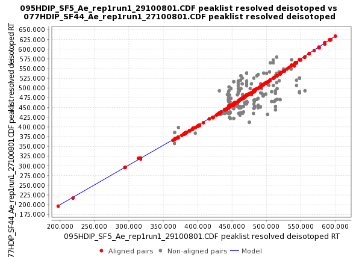

This method is an extension of the Join align method. The alignment of each sample is done against a master peak list which is taken from the first sample in the first round, and from the average of all aligned peak lists in every round. It corrects any linear or non-linear deviation in the retention time of the chromatograms by creating a model of this deviation.
This picture shows an example of two samples with a non-linear deviation in the retention time.
The "deviation" model for the retention time is created by taking some corresponding points from the peak list of two samples using RANSAC algorithm (http://en.wikipedia.org/wiki/RANSAC) and using a non-linear regression method to fit the model.

This picture shows a preview of the model where the red dots represents the aligned peaks taken using RANSAC algorithm, and the blue line represents the fitted model using a non-linear regression.
Using this model, the algorithm can predict the shift in the retention time along all the peak list and use the match score function, used also in Join Align algorithm, to match the peaks. This score is calculated based on the mass and retention time of each peak and ranges of tolerance stipulated in the parameters setup dialog.
This aligner requires the next parameters:
"Peak list name"
This is the suffix to identify the new aligned peak list in Peak list frame of
desktop.
"m/z tolerance"
This value sets the range, in terms of m/z, to verify for possible peak rows to be
aligned. Maximum allowed m/z difference.
"Retention time tolerance after correction"
his value sets the range, in terms of retention time, to verify for possible peak rows to be aligned.
Maximum allowed retention time difference.
"Retention time tolerance"
This value sets the range, in terms of retention time, to
create the model using RANSAC and non-linear regression algorithm.
Maximum allowed retention time difference.
"RANSAC Iterations"
Maximum number of
iterations allowed in the algorithm to find the right model
consistent in all the pairs of aligned peaks. When its value is 0,
the number of iterations (k) will be estimate
automatically.
"Minimum Number of Points"
% of points required to consider the model valid (d).
"Threshold value"
Threshold value (seconds) for determining when a data point fits a model (t).
"Linear model"
Sometimes the shift in the retention time between the peaks in the samples is
not constant making that the model shape is non linear in some
specific cases. This option should be selected only if the model has
to be linear.

New aligned peak list showing peaks from 3 different samples.